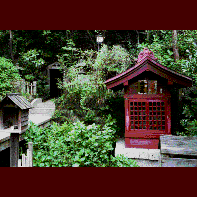

田谷の洞窟/神奈川県横浜市〜鎌倉市周辺 
神奈川県の南東部、三浦半島東部から鎌倉、藤沢一帯は観光地として有名だがこの辺り、寺や海や大仏だけじゃない。
実はこの地帯、日本有数の洞窟多発エリアなのだ。それもとびっきりのカルト洞窟ぞろいなので洞窟マニアには、ぜひおさえていただきたい。
数が多いので簡単に紹介すると、まず有名なところで鎌倉長谷寺の観音洞窟。洞内には様々な観音像が安置されている。
次に北条一族滅亡の地、鎌倉高時腹切やぐら。シダが生い茂るやぐらの中には北条氏の墓と無数の卒塔婆、コワイ。
円覚寺境内の白鹿洞は小さな苔むした洞穴だが、彼寺が落慶開山した日に白い鹿が出てきたという伝説をもつありがたーい処。
その他にも鎌倉には空海が掘ったといわれるいわや不動や心霊スポットとして有名な銭洗弁財天の奥の宮洞窟など数多くの洞窟が口を広げて君を待っている。
このように洞窟が多いのは、この一帯に伝わる「やぐら」と呼ばれる洞窟型の墓地から成る埋葬形式と、そしてもちろん柔らかい地質が直接の原因らしい。
ちょっと変わったところでは三浦半島の黒崎の鼻。
岬全体が旧日本軍の砲台基地だったところで、岩山のあちこちに洞窟の入口があって、中でアリの巣状に繋がっている。照明なし、中は迷路、しかも砲台基地。入ってみる？
最後に当エリアの洞窟キング、大船(正確には横浜市栄区)の田谷の洞窟を紹介しよう。
正式には田谷山瑜伽洞といい、元々古代人の横穴住居だったものを鎌倉期から江戸時代にかけて真言密教の修行窟として掘られた洞窟。
小山の麓に
ある小さな入口を入って行くと思いもかけない長大な地中空間が広がる。
オール手彫り上下3段、全長1㎞以上、仏像300体、地中なのに川まである。灯りはロウソク1本。寒いぞ暗いぞ人いねーぞ。
1998.4.
珍寺大道場 HOME